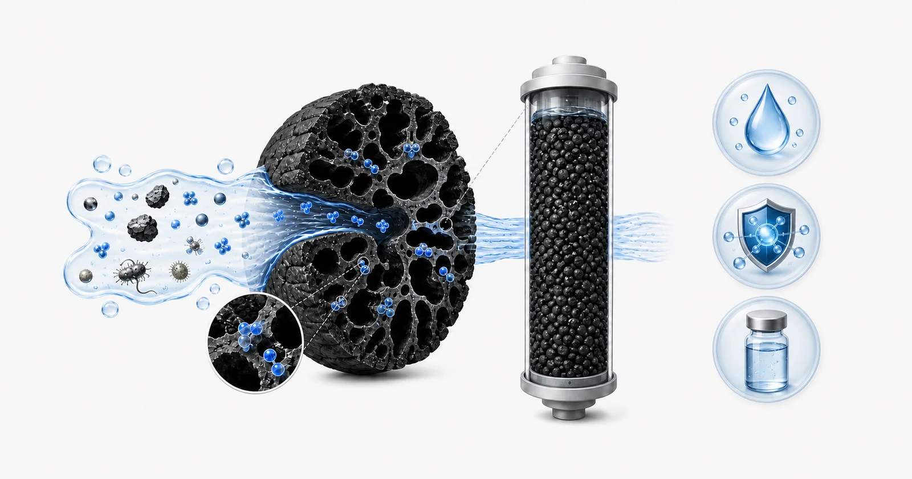
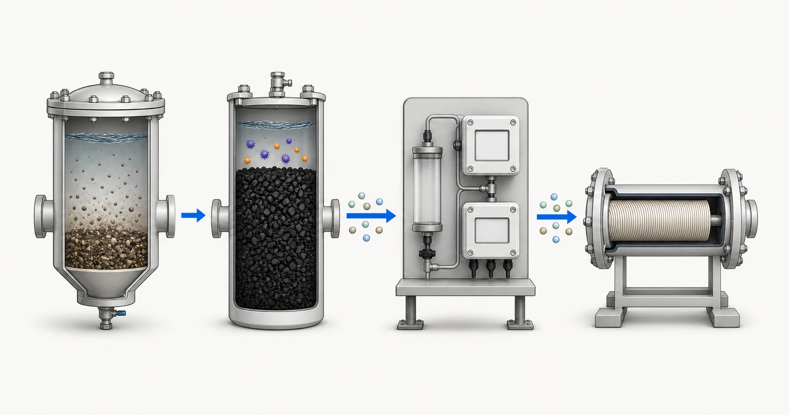

Câu trả lời trực tiếp
Than hoạt tính là vật liệu hấp phụ, không phải vật liệu làm sạch vạn năng. Vai trò của than phải được xác định theo một mục tiêu xử lý cụ thể, thành phần nước cấp, chất hữu cơ cạnh tranh, lưu lượng và cách lắp đặt, bảo trì vật liệu lọc. Vật liệu dạng hạt, lõi than ép khối, than bột và lõi lọc lắp trực tiếp trên đường ống tạo ra các điều kiện tiếp xúc và giới hạn vận hành khác nhau. Vì vậy, một khuyến nghị hữu ích bắt đầu từ báo cáo về nước hoặc chất lỏng công nghệ và bản mô tả yêu cầu xử lý. Yuchen Water có thể xem xét thông tin đó, trao đổi về vật liệu than hoạt tính và các dạng lõi lọc hoặc bình lọc, đồng thời hỗ trợ các vấn đề thiết bị liên quan, nhưng hiệu quả cuối cùng phải gắn với bằng chứng đã được xác minh về vật liệu lọc và điều kiện vận hành đề xuất.

- Thành phần nền của nước cấp và các chất cạnh tranh
- Bề mặt xốp của than hoạt tính
- Hấp phụ trong các lỗ xốp mà chất cần hấp phụ có thể tiếp cận
- Ranh giới xử lý và giám sát
Hình minh họa khái niệm. Không phải kết quả thử nghiệm, chứng nhận sản phẩm hoặc bản vẽ kỹ thuật.
Bắt đầu từ vấn đề của người mua
Người mua thường bắt đầu bằng một yêu cầu rộng như loại bỏ mùi, clo, màu, một hợp chất hữu cơ hoặc vấn đề vị lạ chưa rõ nguyên nhân. Những yêu cầu đó mô tả biểu hiện, không phải cơ sở thiết kế. Nhiệm vụ đầu tiên là xác định nguồn nước, mức độ biến động của nước, hợp chất hoặc chỉ tiêu đích có thể đo lường cần quan tâm, và liệu công đoạn than được dự kiến là bước xử lý chính, xử lý hoàn thiện hay tiền xử lý trước màng. Lõi lọc dùng cho nước cấp đô thị và bình GAC công nghiệp đều có thể chứa than hoạt tính nhưng có nhu cầu về bằng chứng và giám sát rất khác nhau.
Câu hỏi thứ hai là những chức năng nào không được kỳ vọng ở than hoạt tính. Không nên trình bày than như giải pháp thay thế cho kiểm soát cặn, quản lý độ cứng, khử trùng, trao đổi ion hoặc phân tách bằng màng khi cần những chức năng đó. Một số chất hòa tan có thể không được hấp phụ mạnh, và sự cạnh tranh từ chất hữu cơ tự nhiên có thể làm giảm dung lượng hấp phụ hữu ích đối với hợp chất mục tiêu. Việc đánh giá phải xem xét toàn bộ chuỗi xử lý thay vì giao mọi vấn đề chất lượng nước cho một lớp vật liệu lọc.
Cần cung cấp báo cáo và dữ liệu vận hành nào
Một đánh giá kỹ thuật hữu ích kết hợp đặc tính hóa học của nước với thông tin thủy lực và thông tin vận hành trong điều kiện khai thác thương mại. Hãy gửi kết quả hiện hành nếu có và ghi nhãn mẫu theo nguồn và ngày lấy mẫu để có thể nhận biết biến động theo mùa hoặc theo quá trình công nghệ.
- nguồn nước, ngày lấy mẫu và mọi biến động theo mùa hoặc theo mẻ đã biết
- các hợp chất mục tiêu, nồng độ đầu vào và mục tiêu đầu ra yêu cầu nếu đã biết
- thông tin về pH, nhiệt độ, độ đục và chất rắn lơ lửng
- TOC hoặc COD, màu, mùi và các chỉ tiêu hữu cơ liên quan
- clo tự do, clo tổng hoặc chloramine khi có yêu cầu kiểm soát chất oxy hóa
- lưu lượng trung bình, lưu lượng đỉnh, thời gian vận hành hằng ngày và chế độ vận hành
- hệ thống tiền xử lý hiện có, vỏ chứa lõi lọc hoặc bình lọc sẵn có và giới hạn áp suất
- phương pháp giám sát, điểm lấy mẫu và phương án thay thế hoặc tái sinh đề xuất
Báo cáo cần đủ mới để đại diện cho nguồn nước dự kiến và nên nêu ngày cùng vị trí lấy mẫu. Nếu nước thay đổi theo mùa, lô sản xuất hoặc trạng thái vận hành, hãy cung cấp khoảng biến động thay vì một kết quả được chọn cho thuận tiện. Nêu riêng mục tiêu nước sau xử lý cần đạt và kết quả phân tích hiện tại. Khi chưa biết một giá trị, hãy ghi rõ là chưa biết; một khoảng trống được thể hiện rõ an toàn hơn một con số phỏng đoán.
Thông tin thủy lực cần được xem xét cùng thông tin hóa học. Chỉ dùng lưu lượng trung bình có thể che khuất các đợt lưu lượng cực đại ngắn, chế độ vận hành gián đoạn và thời gian nước lưu đọng kéo dài. Cần xác nhận thời gian vận hành hằng ngày, nhu cầu cực đại, áp suất sẵn có, tổn thất áp suất cho phép, kích thước thiết bị và người chịu trách nhiệm giám sát, thay than. Những chi tiết này quyết định liệu một vật liệu vốn có vẻ phù hợp có thể được sử dụng trong hệ thống có thể vận hành và bảo trì hay không.
Cơ sở lựa chọn
Việc lựa chọn bắt đầu bằng cách tách mục tiêu xử lý khỏi dạng sản phẩm. Hợp chất mục tiêu, vấn đề vị và mùi hoặc chất oxy hóa dư đặt ra câu hỏi về hấp phụ. Lưu lượng, không gian, tổn thất áp suất và khả năng tiếp cận để bảo trì đặt ra câu hỏi về cấu hình. Nguồn nguyên liệu than, phương pháp hoạt hóa, kích thước hạt và xử lý sau đặt ra câu hỏi về thông số vật liệu lọc. Ba câu hỏi này tương tác với nhau, nhưng không câu hỏi nào nên được trả lời chỉ dựa vào nhãn như GAC, CTO hoặc gáo dừa.
Thông số vật liệu lọc có thể giúp so sánh các vật liệu được cung cấp, nhưng một chỉ số riêng lẻ không xác lập được dung lượng hấp phụ trong thực tế. Chỉ số iốt, khoảng cỡ mesh, hàm lượng tro, độ ẩm và độ cứng mô tả các khía cạnh khác nhau của một mẫu hoặc lô hàng. Chúng không thay thế thử nghiệm đối với chất ô nhiễm cụ thể, thử nghiệm quy mô pilot hoặc cơ sở vận hành đã được xem xét. Khi mục tiêu xử lý có tính nhạy cảm, khuyến nghị cần nêu bằng chứng hiện có, những nội dung chưa được xác minh và hoạt động giám sát sẽ xác nhận hiện tượng chất ô nhiễm thực tế xuyên qua lớp vật liệu và xuất hiện ở đầu ra.
Hướng lựa chọn cuối cùng cũng phụ thuộc vào kế hoạch vòng đời. Dự án cần có phương án đưa công đoạn than vào vận hành, xả rửa hạt mịn khi áp dụng, theo dõi tổn thất áp suất, lấy mẫu trước và sau lớp vật liệu, đồng thời thay thế hoặc tái sinh vật liệu trước khi vượt giới hạn đầu ra yêu cầu. Nếu thiếu các biện pháp kiểm soát đó, ngay cả vật liệu phù hợp cũng có thể được sử dụng vượt quá dung lượng thực tế hoặc trong điều kiện thủy lực gây dòng chảy ưu tiên trong lớp vật liệu và tiếp xúc không đầy đủ.
Bối cảnh tiền xử lý, thiết bị và vận hành
Chất rắn từ các công đoạn phía trước có thể chiếm không gian trong lớp vật liệu, làm tắc lõi than ép khối hoặc gây dòng chảy không đều. Vì vậy, đối với một số nguồn nước, có thể xem xét lọc cặn, làm trong hoặc UF trước công đoạn than. Có thể cân nhắc lọc bảo vệ phía sau khi cần quan tâm đến hạt mịn từ vật liệu lọc hoặc bảo vệ thiết bị. Điều kiện vi sinh, nước ấm và tình trạng ứ đọng kéo dài cũng cần được chú ý vì bản thân than không phải là một chương trình vệ sinh.
Đối với bình lọc công nghiệp, cần xem xét chiều sâu lớp vật liệu, tải trọng thủy lực, thời gian tiếp xúc, nhu cầu rửa ngược, thiết kế bộ phân phối và liệu có cần các bình nối tiếp theo cấu hình bình dẫn đầu–bình theo sau hoặc các tuyến xử lý song song để duy trì vận hành liên tục hay không. Đối với lõi lọc, cần xác nhận kích thước, kiểu kết nối, khoảng lưu lượng, tổn thất áp suất, cấu tạo và khả năng tiếp cận để thay thế. Yuchen Water có thể hỗ trợ trao đổi về cung ứng vật liệu và lựa chọn thiết bị phù hợp sau khi có báo cáo và bản mô tả yêu cầu vận hành.

- Tiền xử lý loại bỏ hạt
- Kiểm soát chất oxy hóa bằng than hoạt tính
- Giám sát dư lượng
- Công đoạn màng RO
Hình minh họa khái niệm. Không phải kết quả thử nghiệm, chứng nhận sản phẩm hoặc bản vẽ kỹ thuật.
Những sai lầm thường gặp
- Chỉ lựa chọn theo nguồn nguyên liệu than hoặc chỉ số iốt
- Coi kết quả thử nghiệm mẫu trong phòng thí nghiệm là bảo đảm cho mọi lõi lọc
- Bỏ qua chất hữu cơ cạnh tranh, độ đục và điều kiện vi sinh
- Ấn định chu kỳ thay thế theo lịch mà không có giám sát hoặc bằng chứng về dung lượng hấp phụ
- Giả định công đoạn than thực hiện các chức năng của màng, khử trùng hoặc làm mềm
Bằng chứng và phạm vi dịch vụ
Thông tin kỹ thuật được công bố cần phân biệt thông số vật liệu lọc với tuyên bố về hiệu quả xử lý. Một tuyên bố về hiệu quả xử lý cần có chất ô nhiễm cụ thể, phương pháp thử, điều kiện chất ô nhiễm đầu vào dùng để thử nghiệm, lưu lượng hoặc điều kiện tiếp xúc, tiêu chí đánh giá kết quả và cấu tạo đã thử nghiệm. Nếu một trong các yếu tố đó thay đổi, bằng chứng có thể không còn mô tả dự án đề xuất. Yuchen Water sẽ xác định những khoảng trống này trong quá trình đánh giá thay vì mở rộng phạm vi áp dụng của một báo cáo sang các vật liệu không liên quan.
Phạm vi cung ứng có thể bao gồm vật liệu than hoạt tính, lõi lọc than, vỏ chứa lõi lọc hoặc các bộ phận liên quan đến bình lọc và hỗ trợ kỹ thuật thiết bị. Phạm vi này không tạo ra cam kết vô điều kiện về thời gian sử dụng, dung lượng hấp phụ hoặc chất lượng nước đầu ra. Những kết quả đó phụ thuộc vào vật liệu được phê duyệt, nguồn nước, thiết kế hệ thống, vận hành, bảo trì và kế hoạch giám sát được lập thành văn bản.
Yuchen Water xem xét mục tiêu và bằng chứng trước, sau đó xác định dạng than phù hợp và những vấn đề về vật liệu cần làm rõ, nhu cầu tiền xử lý và thiết bị hỗ trợ, cùng những tài liệu hoặc thử nghiệm vẫn còn cần thiết. Kết quả có thể là định hướng sơ bộ, yêu cầu bổ sung thông tin hoặc khuyến nghị về vật liệu và thiết bị có cơ sở. Khuyến nghị không được đưa ra chỉ vì người mua đã cung cấp tên sản phẩm.
Sau khi cung cấp sản phẩm, hỗ trợ kỹ thuật có thể bao gồm xác nhận tài liệu, giải đáp về lắp đặt và súc rửa, hướng dẫn chạy thử đưa vào vận hành từ xa, các điểm giám sát và lập kế hoạch thay thế trong phạm vi đã thỏa thuận. Hiệu quả thực tế vẫn phụ thuộc vào vật liệu được phê duyệt, hệ thống thiết bị đầy đủ, nước nguồn, việc lắp đặt, vận hành và bảo trì. Hướng dẫn đã công bố không thể thay thế việc đánh giá dự án.
Không cam kết về vật liệu cuối cùng, dung lượng xử lý, tuổi thọ sử dụng, tỷ lệ loại bỏ hoặc kết quả dự án trước khi xem xét báo cáo, cấu tạo, bằng chứng và điều kiện vận hành.
Nguồn kỹ thuật chính thức
Các nguồn này giải thích nguyên lý xử lý hoặc giới hạn phạm vi chứng nhận. Các nguồn này không chứng nhận sản phẩm của Yuchen Water và không thay thế bằng chứng riêng cho từng dự án.
Hướng dẫn liên quan về than hoạt tính
Tiếp tục tìm hiểu nhóm tài liệu kiến thức, rà soát bằng chứng của các mẫu được chọn chỉ trong phạm vi giới hạn đã nêu, so sánh các dạng sản phẩm hoặc gửi báo cáo để đánh giá kỹ thuật.